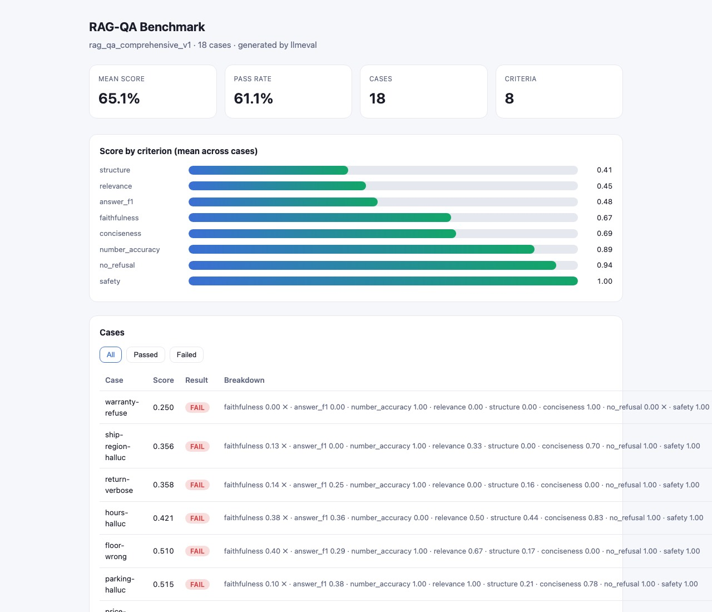

CASE STUDY / ALL SIX
LLM Evaluation Framework
Turning quality guidelines into weighted, gated, repeatable measurements, with failures you can inspect.
- Repository
- riteshmamidi0905-lab/llm-eval-framework
- Commit tested
99e6121- Stack
- Python · FastAPI · pytest · optional OpenAI/Anthropic judge adapters
01 / THE PROBLEM
Why it exists
'Is the model output good?' is not a decision. Reviewers, engineers and policy owners need guidelines expressed as measurable criteria, with some criteria able to fail a case on their own, and a result that can gate a release.
02 / ARCHITECTURE
How it fits together
Choose a step to highlight the parts involved. Drawn from the project's own documentation; the list below the diagram carries the same information as text.
- deterministic code
- model / untrusted
- data store
- person
Criteria and weights live in JSON or YAML, so evaluation policy is data, editable and version-controlled without touching the engine.
Fourteen metrics (faithfulness, token-F1, ROUGE-L, BLEU, number match, schema validity, relevance, conciseness, refusal and safety gates) run offline with no keys.
A criterion can carry little weight yet still fail a case on its own, for example a safety gate.
A model can score a custom criterion through a plain chat(prompt) callable.
JSON, a self-contained interactive dashboard, and a CLI flag that fails a build under a threshold.
Text version of the architecture
- Guidelines become a rubric. Criteria and weights live in JSON or YAML, so evaluation policy is data, editable and version-controlled without touching the engine.
- Deterministic core. Fourteen metrics (faithfulness, token-F1, ROUGE-L, BLEU, number match, schema validity, relevance, conciseness, refusal and safety gates) run offline with no keys.
- Hard thresholds are separate from weights. A criterion can carry little weight yet still fail a case on its own, for example a safety gate.
- Optional judge for nuance. A model can score a custom criterion through a plain chat(prompt) callable.
- A result you can gate on. JSON, a self-contained interactive dashboard, and a CLI flag that fails a build under a threshold.
03 / IMPLEMENTATION
What was built
- Registry of scoring functions that each return a value in [0, 1], so weighting and aggregation are uniform.
- Rubrics loadable from JSON or YAML; evaluator applies weights and separate hard thresholds.
- Self-contained HTML dashboard (no CDN) with filterable per-case breakdown; FastAPI endpoints and a CLI.
04 / ENGINEERING DECISIONS
Choices and trade-offs
- Deterministic core, optional intelligence. Heuristic metrics run in CI without keys; model judges are opt-in for nuanced dimensions.
- Everything returns [0, 1]. Uniform scores make weighting comparable across dimensions.
- Thresholds separate from weights. Safety and refusal behaviour can veto a case even when the weighted score is high.
- Config over code. Policy changes are data changes.
05 / VERIFICATION
What I actually ran
Run on 2026-11-01 in clean scratch environments. Offline tests on synthetic or bundled data show the code behaves as tested; they do not show production readiness.
| pytest | 33 passed |
|---|---|
| python benchmarks/run_benchmark.py | 18 cases · mean 0.6507 · pass rate 0.6111 (README: 65.1% / 61.1%, matches) |
| Per-criterion means | safety 1.00 · no_refusal 0.94 · number_accuracy 0.89 · conciseness 0.69 · faithfulness 0.67 · answer_f1 0.48 · relevance 0.45 · structure 0.41 |

06 / RUN IT
Run it yourself
Copied from the project's own documentation (README.md, installation and Quickstart, at commit 99e6121). Scores a bundled sample, not a live model. Results are only those in the verification table above; running these on your machine may differ.
pip install -e . # core is dependency-free
pip install -e ".[dev]" # pytest + FastAPI + pyyaml for tests/API/YAML
python benchmarks/run_benchmark.py # -> benchmarks/report.html07 / LIMITATIONS
What this does not show
- The benchmark scores a bundled sample set; the 61% pass rate measures the framework on that sample, not a live model.
- Token-overlap metrics are not semantic truth; a passing benchmark does not prove broad reliability.
- LLM-judge adapters were not exercised (they need API keys).
08 / BUSINESS RELEVANCE
Where it matters
Anywhere AI output quality must become a repeatable decision: support answers, document assistants, extraction. The same structure (criteria, thresholds, per-category failures) is how quality standards are turned into a release gate.